The landing page refined: the film, the day scene, the islands and the bar.
Four parts, two or three options each, built on the real kit. The three pages below combine them as A, B and C; the switcher at the foot of every page swaps any part on its own, so a mixed pick is just a link. Every page plays in light and dark, at 1440 and on a phone.
1. The main hero image, can we make the video more immersive and longer (10s) and it should play in loop. It should tell the story as much as possible
2. During day mode, the 1st image attached looks too whitish, night mode is fine
3. This part (2nd image attached) can be refined more, the image needs to be more immersive and engaging and it does not look good.
4. The 3rd image - the header with logo and options does not look good, refine it.
Think hard and beautify the page more
The film plays once (8 s by day) and ends on Replay. By day the scene is washed by the page's own near-white ground, blended over its top and foot and laid over the whole plate while an agent works. The islands are a cropped strip with the product renders pasted on. The bar sets a large mark beside a small wordmark, with the links jammed against it in white over a blurred sky.
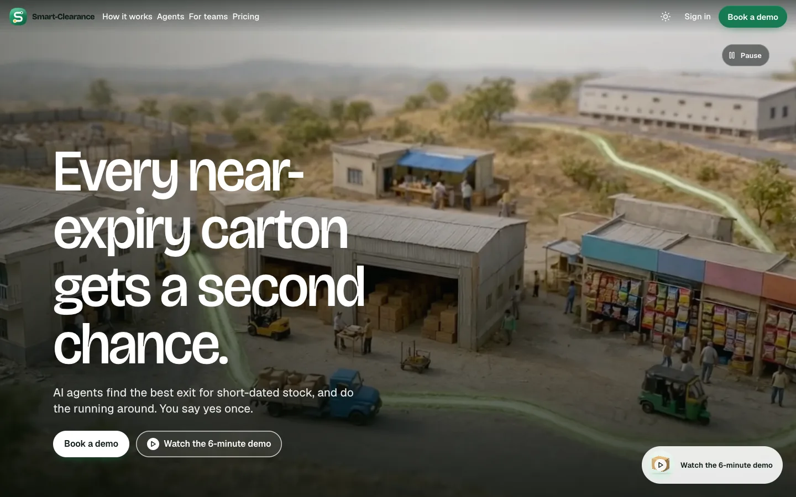
The hero, light, 1440
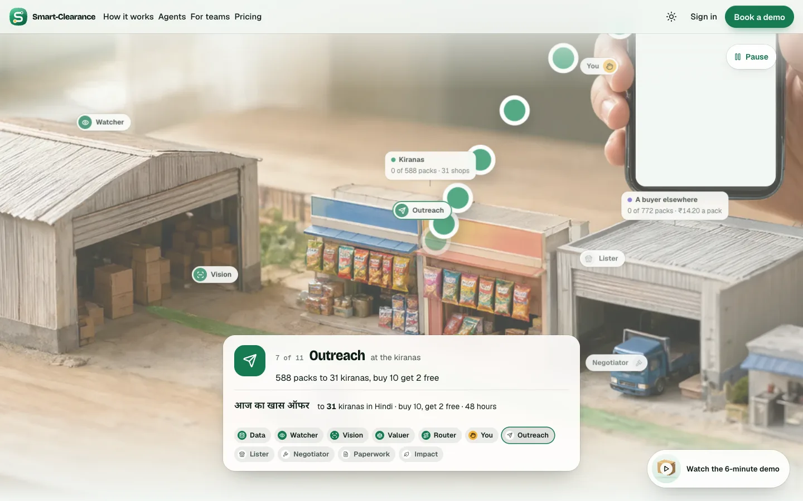
The day scene at the Outreach stop: too white
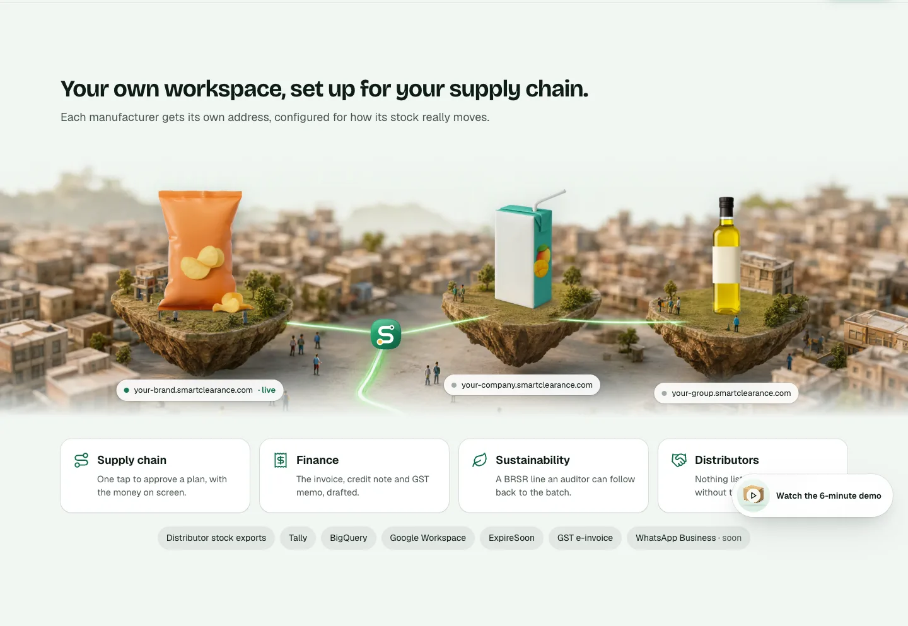
Your own workspace: the strip with pasted productsThe bar over the film
The three pages
Each page is the whole landing page with one option of every part. A is the recommended set.
A · One take, in depth
Recommended
The film as one ten-second take that loops without a cut, with a story strip naming the beat it is on. The day scene re-lit. The islands in depth under a moving sky. The bar as a floating pill.
The page played through: the loop, the scene, the islands
B · The push-in, on screen
The film as a slow push-in from the whole business to the shops, dissolving back to go again. The day scene graded. The workspace itself on a browser window, its address typed in, one tab per team. The bar structured edge to edge with a progress line.
The page played through: the push-in, the scene, the device
C · One day, the strip fixed
The film as one day, morning to night and back, in twenty seconds. The day scene re-lit. The islands strip kept, its products drawn into the plate and the addresses on stems. The links in a centred capsule.
The page played through: the day, the scene, the strip
Part 1 · The film: longer, looping, telling the story
Every option: ten seconds or more, looping, under a Pause control, drifting with the scroll instead of the clock, and a story strip under the copy that names the beat the film is on with a line filling through it: the Watcher's 1,360 packs, the yes with ₹21,770 on screen (in amber), Outreach's 588 packs to 31 kiranas, the Lister's 772 to a buyer and none to the bin. On phones only the current beat shows; under reduced motion, the plate, the final word and the last beat.
The film
The loop
Costs
A · One takerec.
One ten-second take of the whole business at work: the forklift, the workers lifting a carton, the truck to the godown's gate, shoppers at the kiranas, the auto past the shops, the van up the highway, the green path pulsing from the godown to the shops and up the hill.
Seamless: the clip is generated to end on its first frame, so it loops without a cut.
Two clips (day 720p, night 540p), about 3 MB.
B · The push-in
The camera glides from the whole business to the kirana lane over ten seconds, as if following a carton to the shelves, while the same work goes on.
A one-second dissolve from the last frame back to the wide shot, on two players.
Two clips; the close shot leaves less sky for the heading.
C · One day
A whole day in twenty seconds: morning to night (the light lowers, the windows and lamps come on, the path brightens), then night to morning. The light theme starts in the morning, the dark one at night; the strip reads the hours.
Two clips chained without a cut: each ends on the frame the other begins on.
Two clips at 720p, about 5 MB; the same film in both themes.
A · the loop, by dayB · the push-in, by dayC · morning to night (then c-dawn.mp4 back)
A rule to change. AGENTS.md says nothing loops forever. WCAG 2.2.2 allows auto-playing motion over five seconds when it can be paused, and the film has Pause. If a looping film is picked, the rule becomes: nothing loops forever except the hero's film, which loops under its Pause control.
Part 2 · The day scene, no longer whitish
Both options change the page the same way: the stage's ground becomes a warm sand field taken from the plate's own table, the top and foot blend over less of the stage, and the wash while an agent works is a sage-dark vignette that darkens the table round the card instead of whitening it. The night treatment is unchanged.
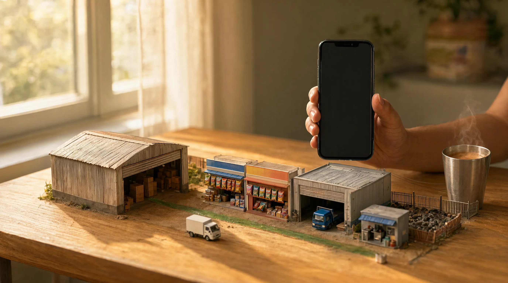
A · Re-lit (recommended): the approved plate re-lit by Qwen as an edit of itself, so the geometry holds. Late-morning sun raking across a honey-oak table, long shadows, the wall and curtain toned to cream.
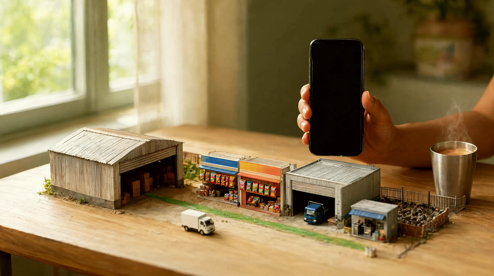
B · Graded: the approved plate as it is, graded in ffmpeg (contrast, saturation, a warm shift). Exact geometry, the same picture, warmer and deeper.
As it is
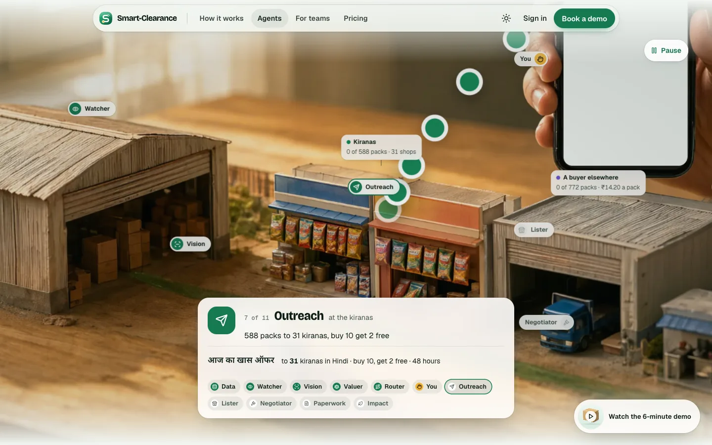
A in the page, at the Outreach stop
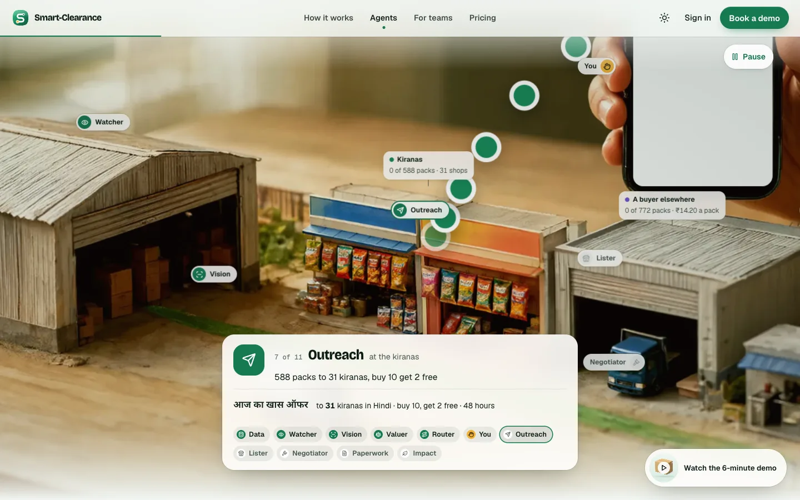
B in the page, at the Outreach stop
Part 3 · The workspace section, immersive and engaging
What it is
Trade-offs
A · Islands in depthrec.
A new 16:9 plate: three islands at three distances in a morning sky over the town, each carrying its product drawn into the plate, the green ribbons arcing down to one point on the town, where the mark sits. The stage is full-bleed and as tall as the window; the plate, the clouds and the address tags move at three speeds with the scroll; each address hangs from its island on a stem and lifts on hover.
A new plate (day and night). On phones the stage shows the nearest island and lists the addresses under it.
B · The workspace itself
No plate: the product on a browser window (a phone on phones), its address typed in as the section comes into view, and the four teams as its navigation: Supply chain, Finance, Sustainability, Distributors, each showing its real card. The tabs play through once; the rail takes over on a click. No client is named.
Drops the islands idea from the SC-28 comp. The most honest and the closest to what Shopify does.
C · The strip, fixed
The section as it is, with its products drawn into the plate instead of pasted on, the addresses on stems, the mask softened, and the plate drifting under the tags with the scroll.
The least change; still a strip.
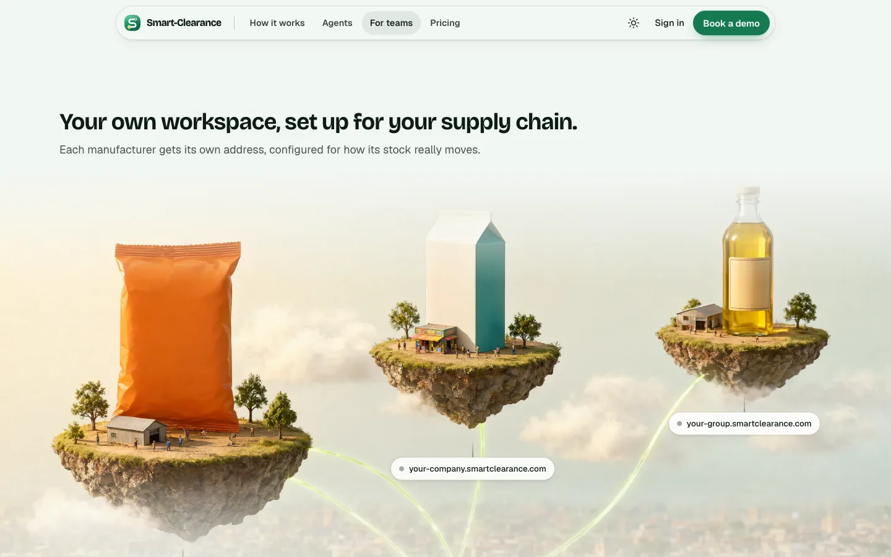
A · Islands in depth
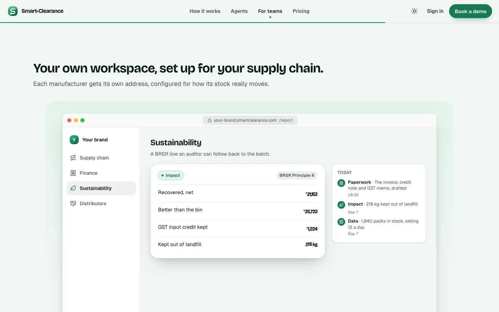
B · The workspace itself
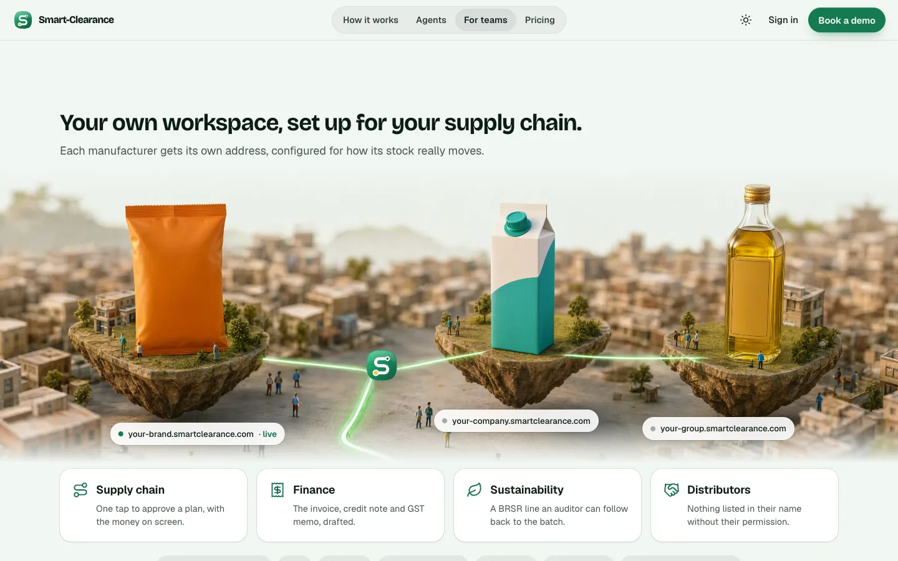
C · The strip, fixed
A's plate, day
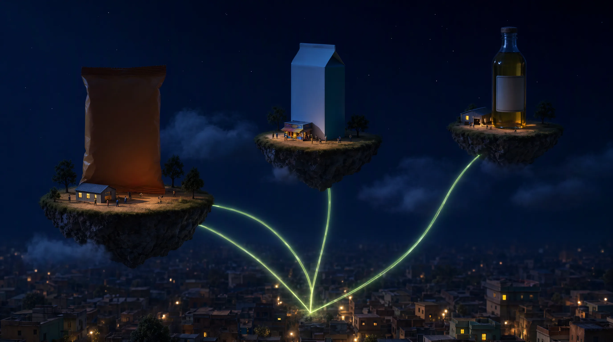
A's plate, nightC's plate, day
Part 4 · The bar
Every option fixes the lock-up (a smaller mark beside a larger wordmark, with room between), sets the links with room between them, marks the current section, and keeps the sign-in menu, Appearance and Book a demo.
What it is
A · The floating pillrec.
One glass capsule floating just below the top, with its own dark glass from the first paint, so it never muddies over the film; the brand, a hairline, the links with a highlight that slides to the current section, then Appearance, Sign in and Book a demo. On scroll it takes the page's glass.
B · The bar, structured
Full width, in three parts: the brand at the left, the links centred with a dot under the current one, the actions at the right; a stronger shade over the film; a 2 px green progress line along its foot once the page has scrolled.
C · Brand left, capsule centre
The brand and the actions free on the edges, and only the links in a centred glass capsule with the sliding highlight.
A · the floating pillB · the bar, structuredC · brand left, capsule centre
A, scrolledB, scrolledC, scrolled
Checks made
Every page renders without console errors in Chromium at 1440 × 900 and 390 × 844, light and dark.
The story strip's dim text is white at 66% over the film's shade (at least 7:1); its lit text is white. The address tags and the switcher sit on the kit's strong glass.
Every figure comes from core/money.js; no client is named anywhere on the page (the device's workspace is "Your brand").
No browser suite was run (SC-55); the a11y, e2e and parity suites would check the picked option once built.
The pick
One option for each part, or one of the three pages as a whole. The recommended set is A throughout. Say "A with the device" or "B with the pill" and the switcher's links show exactly that page.